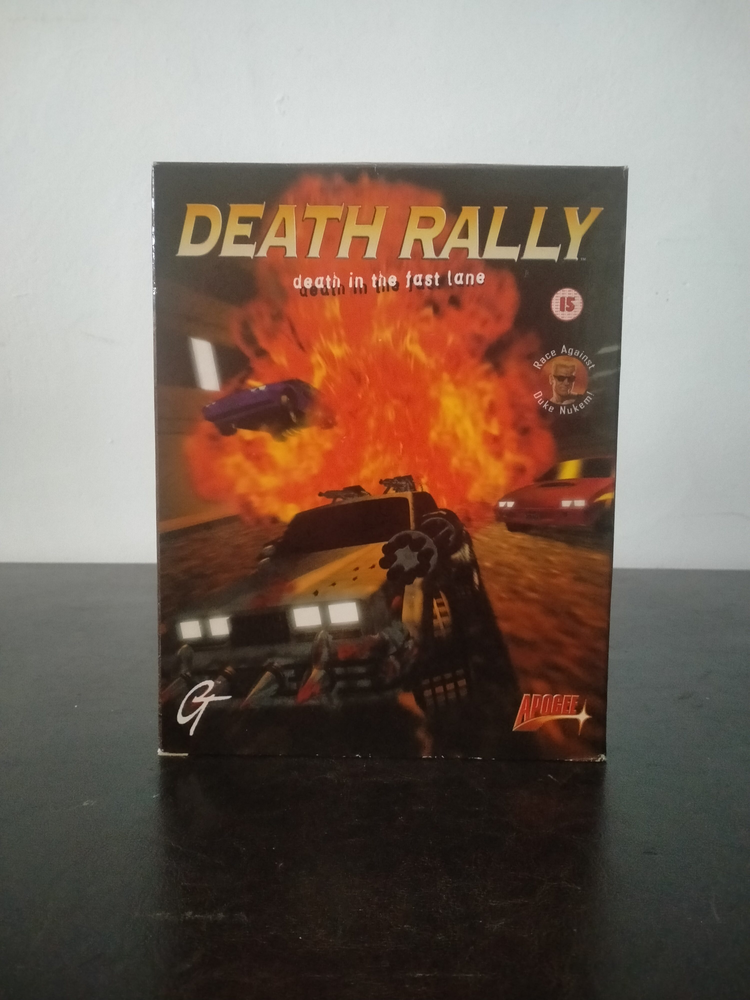

Ficha #000058
Death Rally
Death Rally es un juego de carreras y combate vehicular desarrollado por Remedy Entertainment y publicado por Apogee Software en 1996 para MS-DOS. El título combina conducción arcade con combate armado en perspectiva cenital, incorporando ametralladoras, minas y misiles durante las competiciones. Fue uno de los primeros trabajos importantes de Remedy antes de crear Max Payne y destaca por su tono violento, su ambientación postapocalíptica y su sistema de progresión económica entre carreras. Esta edición física en formato Big Box incluye distribución europea con clasificación por edades y referencia promocional al personaje Duke Nukem, reflejando la estrecha relación comercial entre Apogee y 3D Realms durante la época dorada del PC gaming shareware y retail de mediados de los años noventa.
- Formato
- Big Box
- Plataforma
- MsDos
- Género
- Carreras Combate vehicular Acción Arcade
- Serie
- Todos Big Box
- Desarrollador
- Remedy Entertainment
- Distribuidor
- Apogee Software
- EAN
- —
Contenido de la edición
- CD-ROM
- Manual
Preservación
- Protección
- Sin protección
- Formato recomendado
- BIN/CUE
- Jugable en virtualización
- Sí
Juego preservable mediante imagen BIN/CUE del CD-ROM original. Compatible con DOSBox y otros entornos de virtualización MS-DOS modernos.